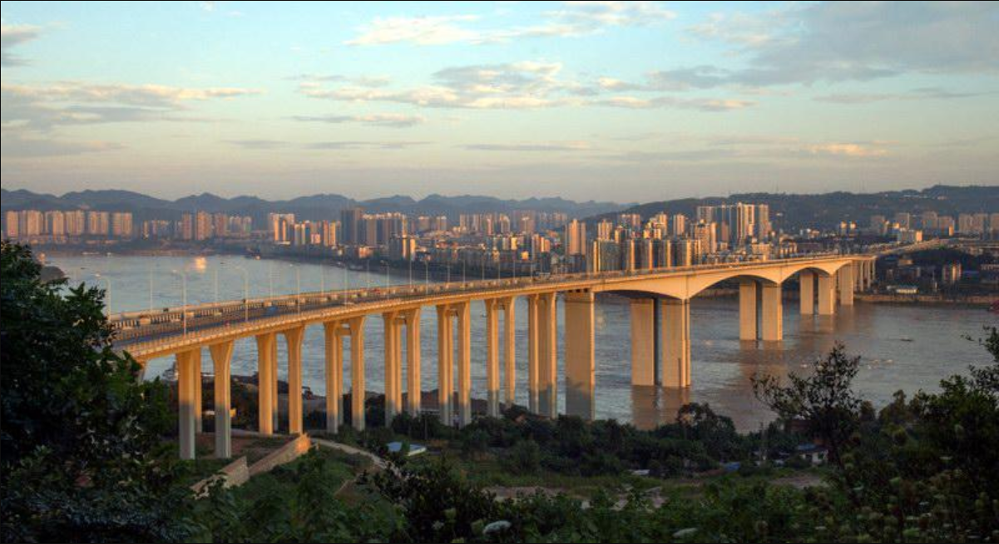
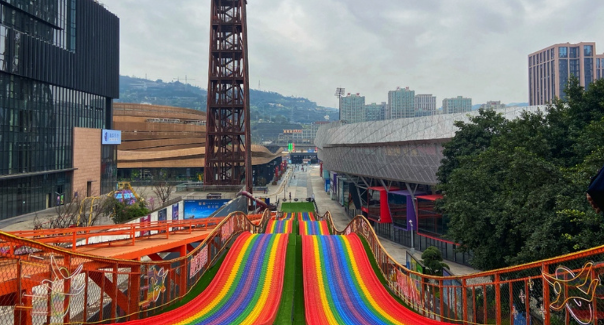

地址：重庆市巴南区鱼洞街道老城片区
开放时间：街区全天开放，商圈店铺9:00—22:00
门票：老街、滨江公园全部免费，海洋乐园单独购票
推荐游玩时长：一日游
最佳季节：春秋时节，江边落日氛围感最强
交通：轨道交通2号线直达鱼洞站；自驾可停华熙商圈停车场

游玩路线推荐：鱼洞老街 → 滨江江滩公园 → 防空洞老影院 → 华熙LIVE潮流街区 → 长江落日江岸 → 夜景灯光集市。
第一站走进百年鱼洞老街，青石板阶梯依山而建，明清老民居层层叠叠，曾经是长江重要水码头，斑驳老街巷充满怀旧气息，随手就能拍出复古胶片大片。沿着石阶走到江边滨江公园，U型长江江湾视野开阔，绿树成荫，江风拂面格外舒适。午后探访深藏山体的红星防空洞老影院，走进七八十年代遗留的旧影棚，沉浸式感受老城旧时光。傍晚前往华熙商圈打卡网红彩虹阶梯、星空隧道，等到夕阳西下，漫步江岸等候橘子海落日，江面铺满暖金色霞光。待到夜色降临，整条商业街灯火亮起，夜市小吃烟火升腾，老城与新潮商圈交融，城市漫步的氛围感直接拉满。

鱼洞老街依山临江，层层石阶纵横交错，老木门、灰瓦老屋保留着原汁原味的码头市井风貌，非常适合拍摄怀旧人像。喜欢新潮玩法可以直奔华熙文体中心，网红彩虹楼梯、荧光隧道成为年轻人拍照聚集地，场馆内经常举办球赛与文艺演出，潮流氛围十足。亲子游客可以前往汉海海洋公园，大洋馆、水母馆精彩纷呈，沉浸式探秘海底世界，小朋友游玩体验丰富。闲暇时沿着长江岸线散步，江滩平缓开阔，吹着江风等候日落，视野一望无际。整座片区消费平价接地气，老街小吃人均十几元就能吃饱，商圈消费丰俭由人，没有过度商业化的溢价，既保留着老巴南的市井烟火，又兼具现代商圈的新潮活力。无论是独自城市漫步、好友结伴拍照，还是全家亲子出行，都能慢悠悠玩上一整天，轻松惬意不赶行程。
✔ 老城豆花饭：嫩豆花配红油蘸水，米饭管够，地道巴南平民美味
✔ 老街凉面与红油抄手：面条劲道，麻酱香浓，是老鱼洞人早餐标配
✔ 江边江湖菜：长江鱼、土碗家常菜，临江农家乐味道正宗
✔ 夜市小吃：杂粮煎饼、山城小串，华熙夜市烟火气十足
1. 老街阶梯坡路较多，一定要穿防滑平底鞋。
2. 傍晚18:30—19:30是长江落日黄金拍摄时间。
3. 防空洞影院属于怀旧旧址，只适合外景打卡，不要随意翻越围栏。
4. 下午先逛老城老街，傍晚再去江岸看日落，行程节奏更顺畅。